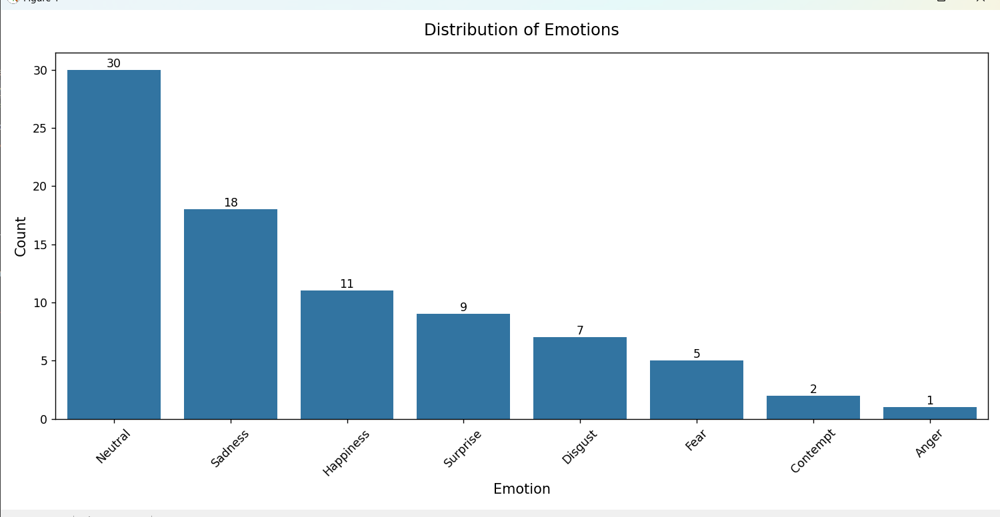
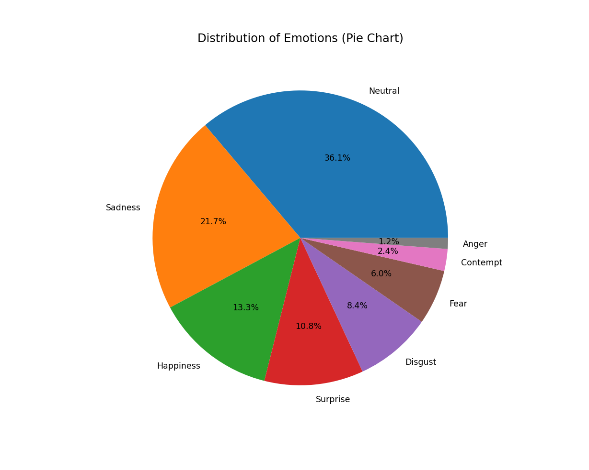
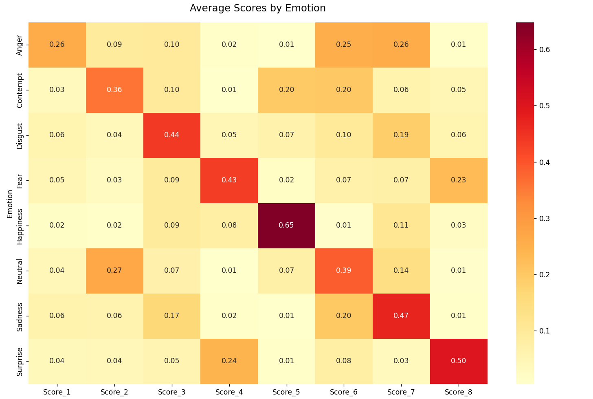
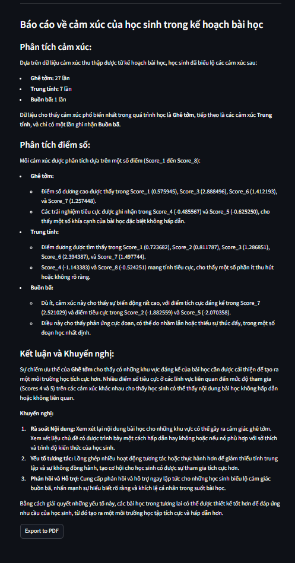

Facial Emotion Analysis for Lesson Quality Evaluation
A real-time computer vision system that analyzes students' facial expressions to estimate engagement and support evaluation of lesson quality.
Traditional approaches to evaluating a lesson often rely on tests or subjective feedback, which may not fully capture students' reactions during the learning process. This project explores whether facial-expression analysis can provide an additional signal for understanding how students respond to a lesson.
I built a computer vision pipeline that captures facial expressions in real time, aggregates emotion data over time, visualizes the results, and uses an AI agent to generate an automated analysis report.
- Face detection: detects students' faces from a live camera stream.
-
Emotion recognition:
classifies facial expressions using the
enet_b0_8_best_afewmodel fromHSEmotion. - Data collection: records detected emotions and aggregates them over time for further analysis.
-
Visualization:
converts the collected data into bar, pie, and heatmap charts
using
Matplotlib. -
Automated analysis:
uses
AutoGento analyze the collected statistics and generate a textual evaluation report. -
Real-time interface:
uses
OpenCVto capture the webcam stream and display detection results directly on the video feed.
I compared two approaches to facial-expression recognition: a simpler detection-based approach and a multi-stage approach involving face detection, facial landmarks, and emotion recognition. The more advanced approach provides richer facial information at the cost of additional computation.
For this project, models from DeepFace,
HSEmotion, FaceTorch, and Hugging Face
were investigated with a focus on the trade-off between
recognition quality and real-time performance.
Selected model:
enet_b0_8_best_afew from HSEmotion,
chosen for its balance between recognition performance
and inference speed in real-time use.
- Real-time processing: emotion recognition must keep up with the incoming webcam stream while maintaining usable frame rates.
- Multiple processing stages: face detection, emotion recognition, data aggregation, visualization, and reporting form a pipeline where upstream processing can affect overall responsiveness.
- From raw predictions to useful analysis: individual emotion predictions are noisy signals, so the system aggregates observations over time before producing higher-level visualizations and analysis.
Why HSEmotion?
The project prioritized a practical balance between recognition quality and real-time inference speed. HSEmotion was selected after comparing several available facial-expression recognition approaches.
Why real-time processing?
Real-time feedback allows the system to observe changes in students' expressions throughout a lesson instead of relying only on a final questionnaire or assessment.
Why aggregate the predictions?
Individual frame-level predictions provide limited information about the overall lesson. Aggregating emotion observations over time makes it possible to visualize changes in emotional state and identify periods that may require further analysis.
The system summarizes detected emotions using three visualization formats: bar charts, pie charts, and heatmaps. These visualizations make it easier to inspect the distribution of emotions and observe how emotional states change over time.



After the emotion data is collected and visualized, an
AutoGen-based AI agent analyzes the resulting statistics
and generates a textual report for the user.

- Real-time webcam-based facial-expression detection pipeline.
-
Emotion recognition using the HSEmotion
enet_b0_8_best_afewmodel. - Emotion data collection and temporal aggregation pipeline.
- Real-time visualization of predictions with OpenCV.
- Statistical visualization using Matplotlib.
- Automated analysis and report generation using AutoGen.
- PDF-based output containing the aggregated analysis results.
The system currently performs emotion recognition directly from a real-time camera stream. Increasing the number of people in the scene increases the processing load and can reduce responsiveness.
- Current evaluation is based on a limited controlled test set; broader validation is still needed.
- Real-time performance decreases as the number of simultaneously detected students increases.
- Facial-expression recognition alone cannot fully determine whether a student understands or is engaged with the lesson.
- _______________________________________________
- Use facial landmarks and FACS Action Units to capture more fine-grained facial behavior beyond basic emotion labels.
- Add gaze tracking and face-pose estimation to detect possible loss of attention.
- Introduce identity recognition to associate observations with individual students in a controlled environment.
- Use accumulated lesson data to identify periods of low engagement and automatically suggest improvements to teaching content.
- Parallelize face detection and emotion recognition to reduce end-to-end processing latency.
- Explore asynchronous post-lesson analysis as an alternative when real-time processing is not required.
- _______________________________________________
| Layer | Tools |
|---|---|
| Face & emotion recognition | HSEmotion |
| Video processing | OpenCV |
| Visualization | Matplotlib |
| AI analysis | AutoGen |
| Language | Python |